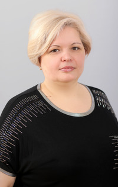
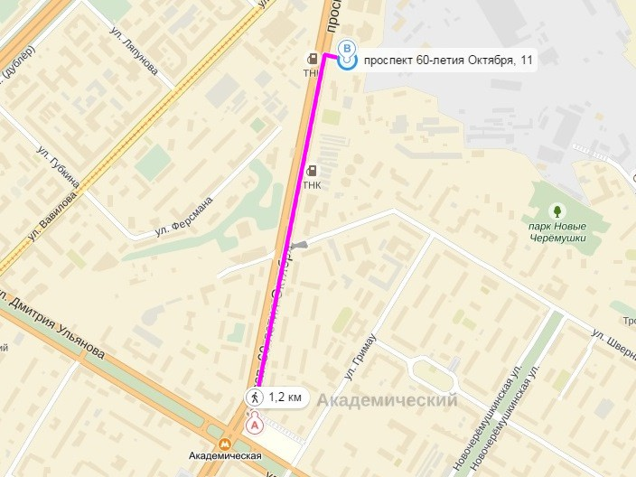

Адрес общежития
Москва, пр.Контакты администрации
Олег Владимирович КирвяковНачальник участка |
kirvyakov.ov@misis.ru Кабинет — 518 |
Пн.-пт. Перерыв |
||
Наталья Александровна ОвдиенкоАдминистратор |
ovdienko.na@misis.ru Кабинет — 418 |
Пн.-пт. Перерыв |
||
|  |
Оксана Викторовна ЧернышАдминистратор |
chernysh.ov@misis.ru Кабинет — 1518 |
Пн.-пт. Перерыв |
|
 |
Мустафаев Мухаммадали МухамадиевичКомандир СОО студгородка «Горняк-2» |
m2011232@edu.misis.ru Кабинет — 1513б |
Пн.-пт. |
|
Схема проезда | ||||